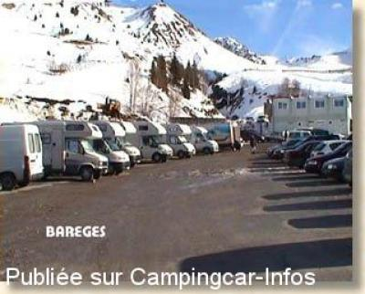
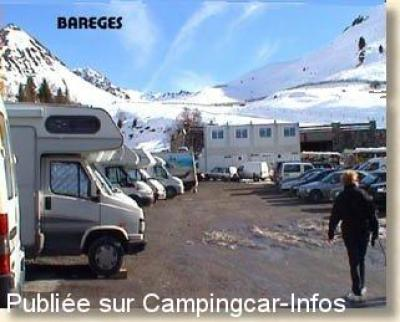

APN = Parking toléré jour/nuit de :
BARÈGES
(N° 560)
Accès/adresse :
Route de Tournabou
Parking Le Tournabou
65120 BARÈGES
Parking Le Tournabou
65120 BARÈGES
Latitude : (Nord) 42.90334° Décimaux ou 42° 54′ 12′′
Longitude : (Est) 0.1008° Décimaux ou 0° 6′ 2′′
Tarif : Gratuit
Services :

Location de jet-ski et balade de nuit vers restaurants de la station
Activité liée à l'ouverture de la station de ski
WC publics ouvert l'hiver jusqu'à 17 heures
Autres informations :
http://www.bareges.com
Suite aux graves intempéries de juin 2013, la départementale 918 est fermée au niveau de ce parking. Jusqu'à nouvel ordre, toute la circulation passe par Super Barèges pour monter au Tourmalet

Le 14/03/2003 par Francis Simonek

Le 14/03/2003 par Francis Simonek
de
regis lesaint
le 22/08/2015 :
effectivement la route ayant été déviée la circulation est beaucoup plus dense, je me suis garé à coté du ruisseau comme cela on n'entends que le bruit de l'eau et peu les véhicules. La nuit c'est hyper-calme et surtout non-éclairé donc hyper sécurisant. j'y suis resté 2 nuits le 18 & 19 Aout 2015.
effectivement la route ayant été déviée la circulation est beaucoup plus dense, je me suis garé à coté du ruisseau comme cela on n'entends que le bruit de l'eau et peu les véhicules. La nuit c'est hyper-calme et surtout non-éclairé donc hyper sécurisant. j'y suis resté 2 nuits le 18 & 19 Aout 2015.
de
Jean Luc
le 17/09/2013 :
§ En complément du commentaire de sept 2013 il est à noté que la départementale 918 est fermé maintenant au niveau de ce parking et que toute la circulation passe par super Barèges pour monter au Tourmalet
§ En complément du commentaire de sept 2013 il est à noté que la départementale 918 est fermé maintenant au niveau de ce parking et que toute la circulation passe par super Barèges pour monter au Tourmalet
de
Jean Luc
le 17/09/2013 :
Septembre 2013
Avons passé la nuit sur ce parking situé sous le col du Tourmalet. Site calme et silencieux, peu de circulation en soirée.
Septembre 2013
Avons passé la nuit sur ce parking situé sous le col du Tourmalet. Site calme et silencieux, peu de circulation en soirée.
de
fred 65
le 26/12/2003 :
Ce parking n'est tolèrè pour les CC que jusqu'à 19h car il se situe en zone rouge (couloir d'avalanche). Il est formellement interdit d'y passer la nuit, d'ailleurs ce soir, la gendarmerie locale invitait tous les camping-caristes à quitter les lieux dès que possible.
Ce parking n'est tolèrè pour les CC que jusqu'à 19h car il se situe en zone rouge (couloir d'avalanche). Il est formellement interdit d'y passer la nuit, d'ailleurs ce soir, la gendarmerie locale invitait tous les camping-caristes à quitter les lieux dès que possible.